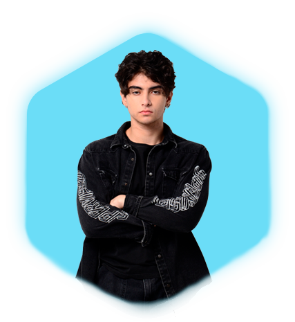

22 anos, estudante de Análise e Desenvolvimento de Sistemas (Infnet) e formado em Produção Multimídia (FIAP). Atuando atualmente na área de produto na Nubank Crypto, desenvolvo soluções por meio de agentes de IA, automações e construção de dashboards, colaborando com stakeholders.

MINHAS ESPECIALIDADES
Fullstack
Desenvolvimento de aplicações web de ponta a ponta, do front ao back: interfaces responsivas com HTML5, CSS3 e JavaScript, back-end com Python e PHP e integração de APIs e bancos de dados como Databricks.
Prompt Engineer
Prompt engineering avançado com Claude e Cursor no dia a dia: estruturação de contexto, instruções e validações para que modelos de IA entreguem respostas confiáveis e soluções prontas para o negócio.
Automações e Agentes
Desenvolvimento e orquestração de agentes de IA que analisam dados, preenchem planilhas no Google Sheets e comunicam resultados no Slack, construídos com Python, n8n e Zapier.
MUITO PRAZER, SOU THÉO OLIVEIRA DIAS
Tenho 22 anos e moro na Zona Leste de São Paulo. Sou estudante de Análise e Desenvolvimento de Sistemas na Infnet, com ênfase em banco de dados, lógica de programação e desenvolvimento orientado a IA, e formado em Produção Multimídia (UX e Web Design) pela FIAP. Atualmente atuo na área de produto da Nubank Crypto, no time de Wallet.
Tenho experiência com prompt engineering avançado, criando soluções por meio da automação de processos: desenvolvo agentes que analisam dados, preenchem planilhas no Google Sheets e comunicam os resultados em canais do Slack, construídos com ferramentas como n8n e Zapier. Uso Cursor e Claude no dia a dia e colaboro continuamente com stakeholders, traduzindo necessidades de negócio em soluções entregáveis.
MINHA EXPERIÊNCIA
Jovem Aprendiz — Product Operation Nubank Crypto (Wallet Team)
Nubank
- Agentes de IA para o negócio: desenvolvi agentes de IA customizados integrados ao Slack que consultam dados de transações no Databricks, executam validações automatizadas e entregam resultados estruturados em Google Sheets e canais do Slack, eliminando rotinas manuais de checagem do time.
- Ferramenta interna para BPOs: construí do zero uma interface conectada ao Databricks em que BPOs registram solicitações de clientes; os dados alimentam planilhas automaticamente e disparam notificações via agentes de IA no Slack, acelerando o fluxo de atendimento.
- Integração de APIs e dados: orquestrei Slack API, Google Sheets API e Databricks em fluxos ponta a ponta com Python, sem depender de infraestrutura backend complexa.
- Colaboração ágil: trabalho com Product Owners, Engenheiros de Software e stakeholders de negócio em sprints no Jira e em syncs técnicos semanais em inglês, traduzindo necessidades em soluções entregáveis.
Formação
Análise e Desenvolvimento de Sistemas
Infnet — Em andamento
Ênfase em Banco de Dados, Lógica de Programação e Desenvolvimento orientado a IA.
Produção Multimídia
FIAP — Concluído
Ênfase em UX Design, Usabilidade e Web Design.
Idiomas
Português — Nativo
Inglês — Intermediário (uso profissional em reuniões técnicas semanais).